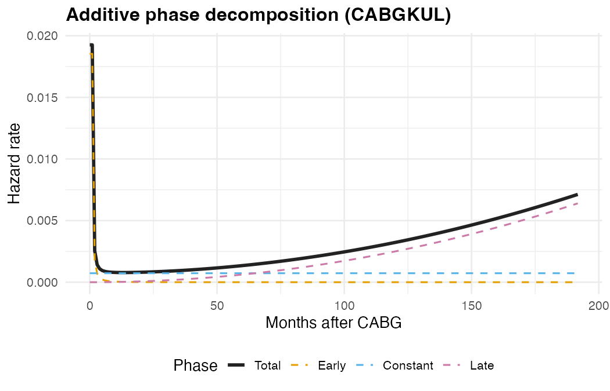
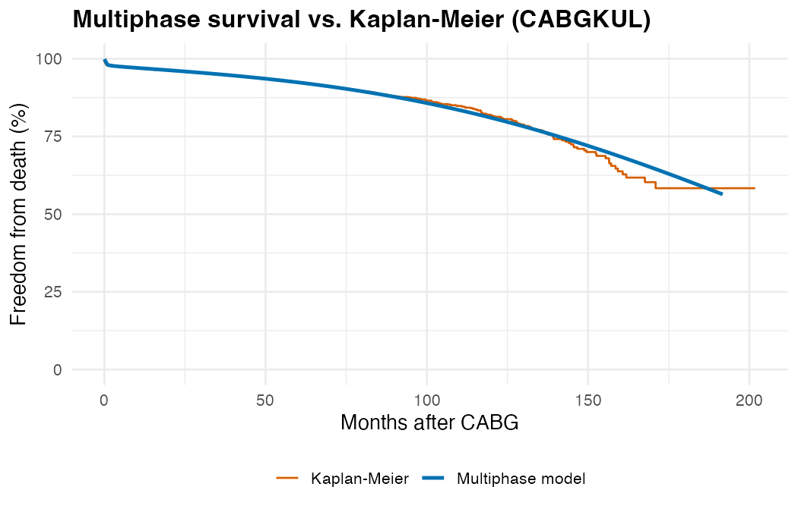

TemporalHazard is a pure-R implementation of the multiphase parametric hazard model of Blackstone, Naftel, and Turner (1986). It decomposes the overall hazard of an event into additive temporal phases — early, constant, and late — each governed by the generalized temporal decomposition family. This structure captures real clinical risk patterns that standard single-distribution models (Weibull, log-normal) cannot represent.
Why multiphase?
After cardiac surgery, the risk of death is not constant. It starts high in the immediate post-operative period (early phase), settles to a low background rate (constant phase), and eventually rises again as patients age (late phase). A single Weibull curve forces a monotone shape; a multiphase model captures all three regimes simultaneously.

The resulting survival curve closely tracks the nonparametric Kaplan-Meier estimate while providing a smooth, parametric representation that supports covariate adjustment, prediction, and extrapolation.

Key capabilities
| Feature | Status |
|---|---|
| Multi-phase hazard modeling (early, constant, late phases) | ✅ |
| Right censoring and interval censoring | ✅ |
| Repeating events (epoch decomposition) | 🚧 |
| Time-varying covariates | ✅ |
| Weighted events | 🚧 |
| Automatic stepwise covariate selection (forward, backward, stepwise) | 🚧 |
| Conservation of Events theorem for numerically stable parameter estimation | 🚧 |
| Covariance and correlation matrix estimation | ✅ |
Installation
# Install from GitHub (requires remotes or devtools)
install.packages("remotes")
remotes::install_github("ehrlinger/temporal_hazard")TemporalHazard requires R >= 4.1.0 and depends on the survival package. Optional packages for visualization and vignettes include ggplot2, numDeriv, and quarto.
Quick start
Multiphase model
# Three-phase additive hazard decomposition
fit_mp <- hazard(
survival::Surv(int_dead, dead) ~ 1,
data = cabgkul,
dist = "multiphase",
phases = list(
early = hzr_phase("cdf", t_half = 0.2, nu = 1, m = 1,
fixed = "shapes"),
constant = hzr_phase("constant"),
late = hzr_phase("g3", tau = 1, gamma = 3, alpha = 1, eta = 1,
fixed = "shapes")
),
fit = TRUE
)
summary(fit_mp)
# Per-phase decomposition of cumulative hazard
t_grid <- seq(0.01, max(cabgkul$int_dead) * 0.9, length.out = 200)
predict(fit_mp, newdata = data.frame(time = t_grid),
type = "cumulative_hazard", decompose = TRUE)Each phase is specified with hzr_phase(), which sets the temporal shape type and starting values. The optimizer estimates both the phase-specific scale parameters and shape parameters jointly. Covariates are supported via the formula interface (see vignette("fitting-hazard-models")).
Documentation
- Getting Started — first fit-predict workflow with visualizations.
- Fitting Hazard Models — intercept-only through multiphase and multi-endpoint models.
- Prediction & Visualization — survival curves, decomposed hazard, patient-specific risk profiles.
- Inference & Diagnostics — bootstrap CIs, decile-of-risk validation, sensitivity analysis.
- Mathematical Foundations — the generalized decomposition, additive hazard model, censoring likelihood, and time-varying covariates.
- Package Architecture — internal design, golden fixtures, and dataset catalog.
- SAS-to-R Migration — statement-by-statement mapping from SAS HAZARD syntax.
Development
install.packages(c("devtools", "roxygen2", "pkgdown", "testthat"))
devtools::install_deps(dependencies = TRUE)
devtools::test()
devtools::check()GitHub Actions runs multi-platform R CMD check on every push and pull request. Coverage is published to Codecov and the pkgdown site deploys automatically from main.
See inst/dev/DEVELOPMENT-PLAN.md for the full roadmap covering the C/SAS migration, multiphase implementation, CRAN release, and planned feature parity work.